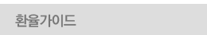
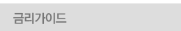
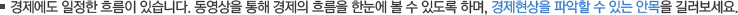

경제흐름읽기
1
자산관리 A to Z
자산설계의 필요성
저축과 투자의 차이
자산설계와 재테크의 차이
성공적인 자산관리를 위한 5단계 프로세스
5분 35초
1
신입사원의 자산관리
신입사원의 자산현황표, 현금흐름표 사례 제시
20대 신입사원의 전세금 마련을 위한 포트폴리오 구성
20대 자기계발 비용은 미래의 가장 큰 자산이자 투자
적립식펀드 수익률에 따른 종자돈 마련 계획
20대 신입사원의 자산관리에서 주의해야 할 사항 정리
5분 35초
1
자산관리 A to Z
자산설계의 필요성
저축과 투자의 차이
자산설계와 재테크의 차이
성공적인 자산관리를 위한 5단계 프로세스
5분 35초